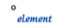
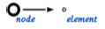
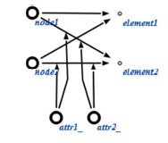
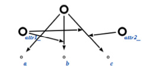

SCs-код - строковый линейный вариант представлени€ SC-кода. ѕредназначен дл€ представлени€ sc-графов (текстов sc-кода) в виде последовательностей символов, которые могут быть отредактированы как при помощи стандартных текстовых редакторов, так и при помощи специализированного sc.s-редактора. “ектсы SCs-кода содержатс€ в файлах с расширением scs.
“екст на €зыке SCs состоит из sc.s-предложений. аждое sc.s-предложение должно заканчиватьс€ точкой с зап€той Ђ;ї.
ѕримеры SCs-предложений:
/* Ёто комментарий */
element; // Ёто тоже комментарий
ѕриведенный SCs-текст соответствует константному sc-элементу неопределенного типа с идентификатором element. ƒанный SCs-текст семантически эквивалентен следующему SCg-тексту:

node -> element;
ƒанный SCs-текст семантически эквивалентен следующему SCg-тексту:

node1, node2 -> element1, attr1_: attr2_: element2;
ƒанный SCs-текст семантически эквивалентен следующему SCg-тексту:

ƒл€ того чтобы задавать более удобно множества, можно использовать следующую запись:
{a, attr1_: b, attr1_: attr3_: c};
ƒанный SCs-текст семантически эквивалентен следующему SCg-тексту:
